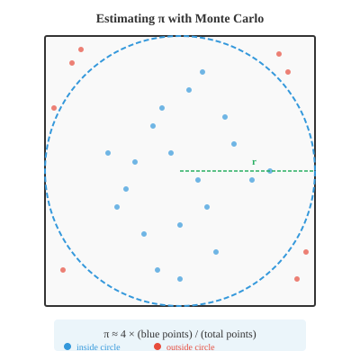

统计推断¶
统计推断超越了简单的"是/否"决策，以量化的不确定性来估计总体参数。本节涵盖置信区间、点估计与区间估计、极大似然估计、矩法以及回归分析——这是连接原始数据与机器学习预测模型的桥梁。
-
假设检验给出一个"是/否"的结论：拒绝或不拒绝原假设。但通常你希望得到更有信息量的结果——你正在估计的参数的一个合理取值区间。这正是置信区间所提供的。
-
点估计是从样本中计算出的单一数值，比如样本均值 \(\bar{x}\)。它是你对总体参数的最佳猜测，但仅凭它本身无法反映估计的精确程度。
-
置信区间在点估计周围包裹一个反映不确定性的范围。其形式为：
- 误差范围取决于三个因素：你希望多高的置信度、数据的变异程度有多大、以及样本量有多大：
- 其中 \(z^\ast\) 是从正态分布中查得的临界值，与你期望的置信水平对应。对于 95% 置信度，\(z^\ast = 1.96\)；对于 99% 置信度，\(z^\ast = 2.576\)。

-
95% 置信区间的含义是：如果你重复进行多次实验，每次构建一个区间，那么大约 95% 的区间会包含真实的总体参数。这并不意味着该参数有 95% 的概率落在这个特定的区间内。参数是一个固定值；变化的是区间本身。
-
示例：你测量了 50 人的身高，得到 \(\bar{x} = 170\) cm，\(\sigma = 8\) cm。构建一个 95% 置信区间。
-
你可以说，有 95% 的把握认为真正的平均身高介于 167.78 cm 和 172.22 cm 之间。
-
当 \(\sigma\) 未知时（这是常见情况），改用样本标准差 \(s\) 和 t 分布：
-
越宽的区间置信度越高，但精度越低；越窄的区间精度越高，但置信度越低。在不降低置信度的前提下，增大样本量可以缩小区间。
-
功效分析帮助你在实验开始前进行规划。要回答的问题是：为了检测到某个给定大小的效应并达到指定的检验功效，我需要多大的样本量？
-
回顾上一节的内容，功效 = \(1 - \beta\)，即正确拒绝错误原假设 \(H_0\) 的概率。常见的功效目标是 80%。
-
对于 z 检验，检测差异 \(\delta\) 所需样本量（给定显著性水平 \(\alpha\) 和功效 \(1-\beta\)）为：
- 例如，要检测平均身高 2 cm 的差异（\(\sigma = 8\)），取 \(\alpha = 0.05\)、功效 80%（\(z_{0.025} = 1.96\)，\(z_{0.20} = 0.84\)）：
-
你大约需要每组 126 人。
-
功效分析可以防止两种常见错误：实验规模太小，无法检测到真实的效应（功效不足）；或者浪费资源做远超必要规模的实验（功效过剩）。
-
蒙特卡洛方法利用随机抽样来求解难以或无法解析求解的问题。其核心思想是：如果你无法精确计算某个量，那就多次模拟并用结果作为近似值。
-
名称来源于蒙特卡洛赌场，寓意随机性的角色。这些方法是机器学习中的重要工具，用于估计积分、评估模型不确定性以及近似复杂分布等任务。
-
蒙特卡洛的一般步骤：
- 定义可能输入的取值范围
- 从该范围中随机生成输入
- 对每个输入评估某个函数
- 汇总结果（平均值、计数等）
-
一个经典例子是估算 \(\pi\)。想象一个边长为 2 的正方形，中心在原点，内切一个半径为 1 的圆。正方形的面积为 4，圆的面积为 \(\pi\)。

- 在正方形内均匀地随机投点。落在圆内的点的比例近似 \(\pi/4\)：
-
点 \((x, y)\) 在圆内的条件是 \(x^2 + y^2 \le 1\)。投的点越多，估算值就越接近 \(\pi\) 的真实值。
-
在机器学习中，蒙特卡洛方法出现在：
- 蒙特卡洛 Dropout：多次执行推理（启用 dropout）来估计预测不确定性
- MCMC（马尔可夫链蒙特卡洛）：在贝叶斯模型中从复杂的后验分布中抽样
- 策略梯度方法：通过采样轨迹来估计强化学习中的梯度
-
因子分析是一种发现隐藏（潜在）变量的技术，这些变量解释了观测变量之间的相关性。如果 10 个个性调查问题可以由 3 个潜在特质（外向性、宜人性、责任心）解释，因子分析就能找出这些特质。
-
该模型假设每个观测变量 \(x_i\) 是少数潜在因子 \(f_j\) 的线性组合加上噪声：
-
\(\lambda\) 值称为因子载荷，表示每个观测变量与各因子的关联强度。这与第 2 章的矩阵分解直接相关；因子分析与特征值分解和 SVD 密切相关。
-
实验设计是安排实验结构的艺术，使你能够得出有效的结论。糟糕的设计甚至会使大量数据变得毫无价值。
-
良好实验设计的关键要素：
- 自变量：你操控的变量（例如药物剂量、模型架构）
- 因变量：你测量的变量（例如恢复时间、准确率）
- 对照组：不接受处理（或接受安慰剂），提供比较的基线
- 随机分配：参与者被随机分配到各组，从而平衡掉未测量的混杂变量
-
常见的实验设计：
- 完全随机设计：受试者被随机分配到处理组。在各组可比的情况下，简单有效。
- 随机区组设计：受试者先按区组分组（例如按年龄），然后在每个区组内随机分配到处理组。这降低了区组因素带来的变异，类似于分层抽样的思路。
- 析因设计：同时测试多个自变量。一个 \(2 \times 3\) 的析因设计包含一个变量的 2 个水平和另一个变量的 3 个水平，共 6 种处理组合。这使你能够检测到交互作用——即一个变量的效应取决于另一个变量的水平。
- 交叉设计：每个受试者按顺序接受所有处理（其间有洗脱期）。每个受试者作为自身的对照，减少了个体差异的影响。
-
在机器学习实验中，这些原则至关重要。比较模型时，应控制随机种子、数据集划分和硬件环境。交叉验证是一种交叉设计形式。逐次移除一个组件的消融研究则遵循析因设计的逻辑。
编程练习（在 CoLab 或 notebook 中完成）¶
-
为身高示例构建一个 95% 置信区间，然后尝试不同的置信水平和样本量。
import jax.numpy as jnp x_bar = 170.0 # 样本均值 sigma = 8.0 # 总体标准差（已知） n = 50 # 样本量 # 常用置信水平的临界值 z_stars = {0.90: 1.645, 0.95: 1.960, 0.99: 2.576} for conf, z_star in z_stars.items(): me = z_star * (sigma / jnp.sqrt(n)) lower, upper = x_bar - me, x_bar + me print(f"{conf*100:.0f}% CI: [{lower:.2f}, {upper:.2f}] (ME = {me:.2f})") -
使用蒙特卡洛模拟估算 \(\pi\)。绘制随着点数增加估算值收敛的曲线。
import jax import jax.numpy as jnp import matplotlib.pyplot as plt key = jax.random.PRNGKey(42) # 在 [-1, 1] x [-1, 1] 内生成随机点 n_points = 100_000 k1, k2 = jax.random.split(key) x = jax.random.uniform(k1, shape=(n_points,), minval=-1, maxval=1) y = jax.random.uniform(k2, shape=(n_points,), minval=-1, maxval=1) # 检查哪些点在单位圆内 inside = (x**2 + y**2) <= 1.0 cumulative_inside = jnp.cumsum(inside) counts = jnp.arange(1, n_points + 1) pi_estimates = 4.0 * cumulative_inside / counts plt.figure(figsize=(10, 4)) plt.plot(pi_estimates, color="#3498db", alpha=0.7, linewidth=0.5) plt.axhline(y=jnp.pi, color="#e74c3c", linestyle="--", label=f"π = {jnp.pi:.6f}") plt.xlabel("点数") plt.ylabel("π 的估算值") plt.title("蒙特卡洛估算 π") plt.legend() plt.ylim(2.8, 3.5) plt.show() print(f"最终估算值: {pi_estimates[-1]:.6f}") print(f"真实值: {jnp.pi:.6f}") print(f"误差: {abs(pi_estimates[-1] - jnp.pi):.6f}") -
执行一个简单的功效分析：给定效应大小和标准差，计算所需样本量并通过模拟验证。
import jax import jax.numpy as jnp # 参数 delta = 2.0 # 效应大小（均值差） sigma = 8.0 # 总体标准差 alpha = 0.05 power_target = 0.80 # 解析计算的样本量 z_alpha = 1.96 # 双尾，alpha=0.05 z_beta = 0.84 # power=0.80 n_required = ((z_alpha + z_beta) * sigma / delta) ** 2 print(f"每组所需样本量: {n_required:.0f}") # 通过模拟验证 key = jax.random.PRNGKey(7) n = int(jnp.ceil(n_required)) n_sims = 5000 rejections = 0 for _ in range(n_sims): key, k1, k2 = jax.random.split(key, 3) group_a = jax.random.normal(k1, shape=(n,)) * sigma + 50 group_b = jax.random.normal(k2, shape=(n,)) * sigma + 50 + delta pooled_se = jnp.sqrt(2 * sigma**2 / n) z = (group_b.mean() - group_a.mean()) / pooled_se p = 2 * (1 - __import__("jax").scipy.stats.norm.cdf(jnp.abs(z))) if p <= alpha: rejections += 1 print(f"模拟功效: {rejections/n_sims:.3f}") print(f"目标功效: {power_target:.3f}") -
可视化置信区间宽度随样本量的变化。这展示了为什么收集更多数据可以得到更精确的估计。
import jax.numpy as jnp import matplotlib.pyplot as plt sigma = 8.0 z_star = 1.96 # 95% 置信度 sample_sizes = jnp.array([10, 20, 30, 50, 100, 200, 500, 1000], dtype=jnp.float32) margins = z_star * sigma / jnp.sqrt(sample_sizes) plt.figure(figsize=(8, 4)) plt.bar([str(int(n)) for n in sample_sizes], margins, color="#3498db", alpha=0.7) plt.xlabel("样本量") plt.ylabel("误差范围 (cm)") plt.title("95% CI 误差范围随样本量增大而缩小") plt.show()